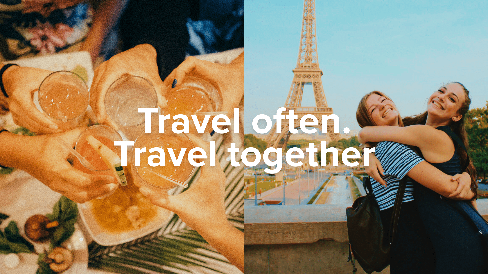
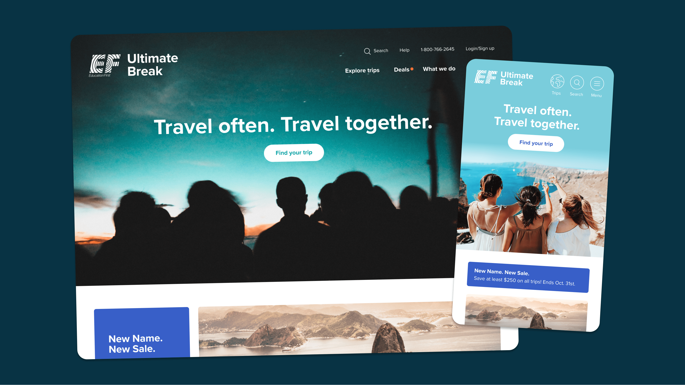
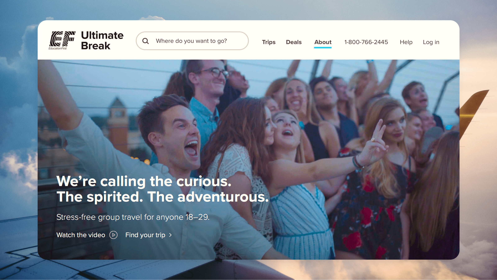
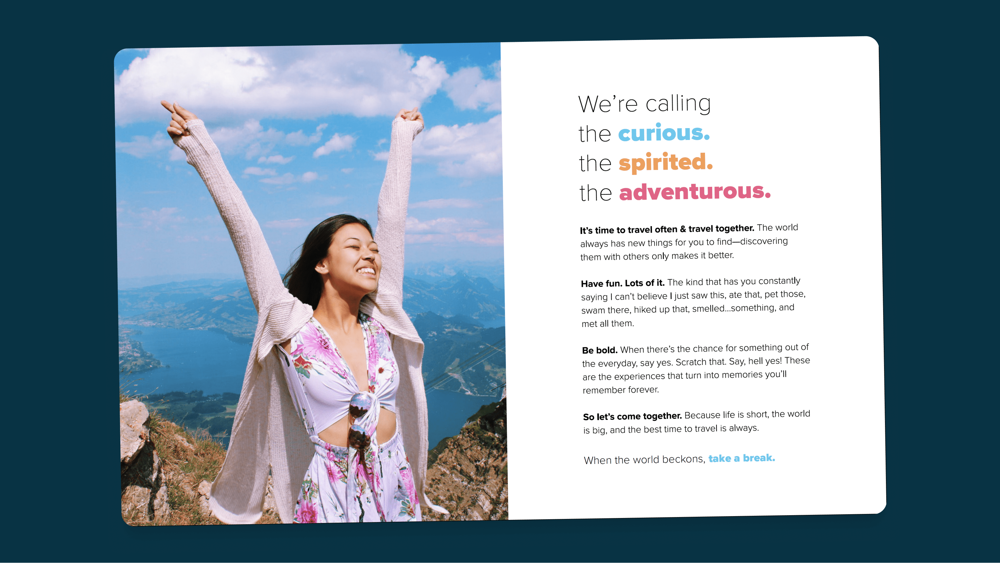
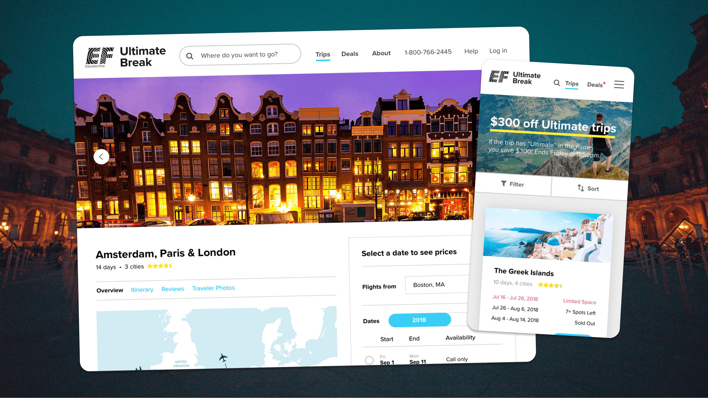
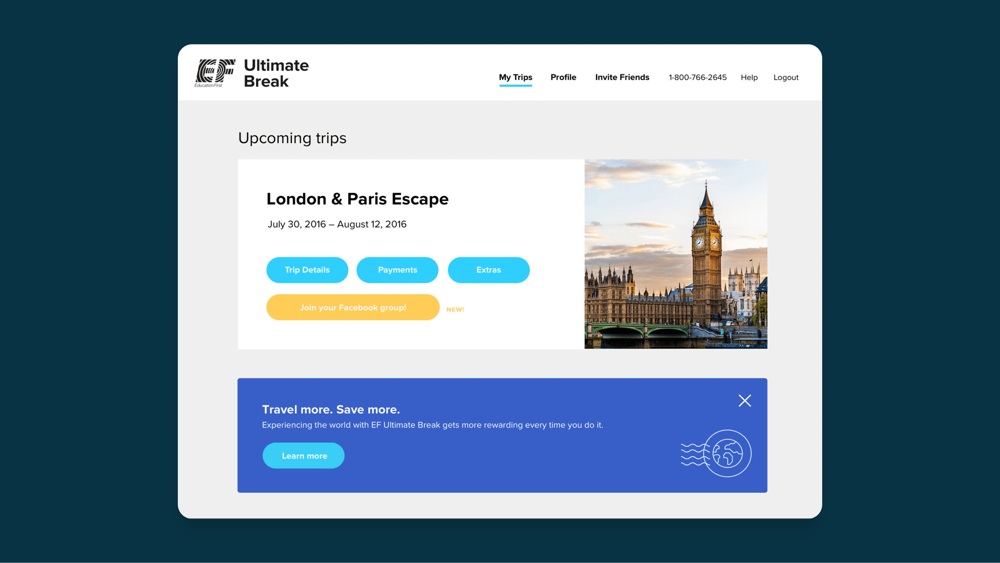
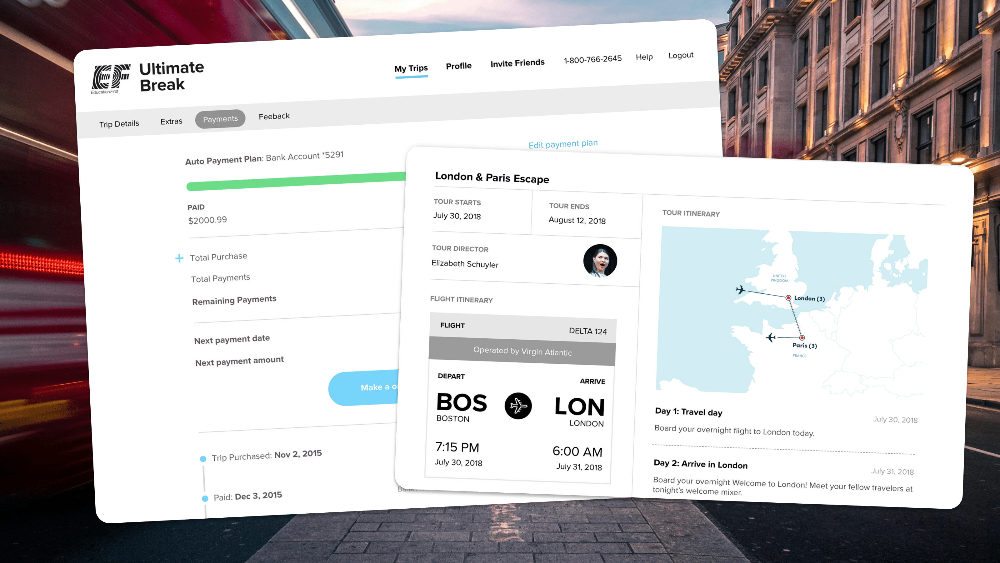
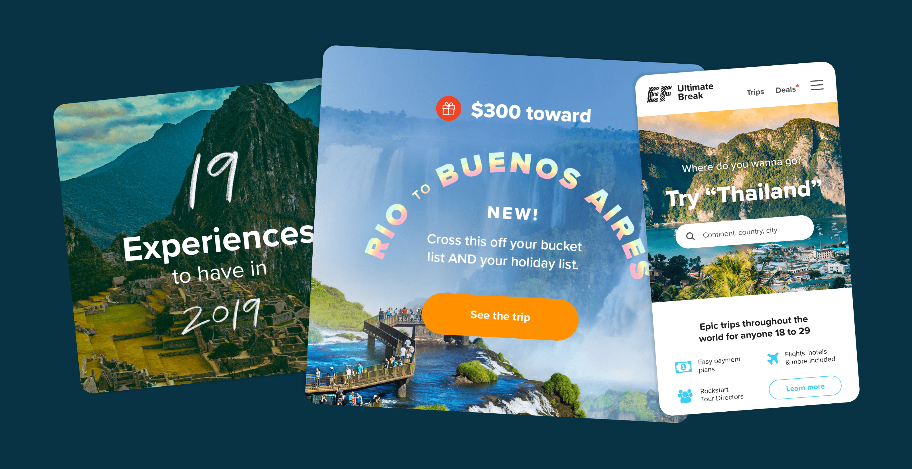

EF Ultimate Break
EF Ultimate Break is on a mission to become the go-to travel company for young Americans. As the design lead, I guided a small, agile team of in-house designers, creating everything from the website to trip itineraries, Facebook ads, and email campaigns. My work heavily emphasized user experience, ensuring travelers could seamlessly find, book, and manage their trips through our website, blending creativity with functionality to support the e-commerce journey.








Credits
Design Production
Sky Erikson
Copy
Michael Ackerson
Kevin McGraw